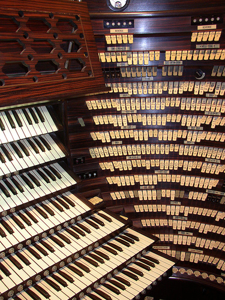

That's what she said.
 I stumbled upon this fascinating Flickr photo set of the World's Largest Organ.
Guiness book of world records lists this organ as "largest pipe organ",
"largest musical instrument ever constructed", and "loudest musical
instrument ever constructed". The organ has > 32,000 pipes,
>1,200 stop, 7 manuals (2 with 7 octaves). The low C pipe stands
64′9″ tall, and weighs 3,350 pounds. It produces a frequency of 8 Hz
(the sound of the vibrating pallet is described as "a helicopter
hovering over the building").
The pictures are fascinating. Check out the whole set.
This video gives a little of the story about the organ:
Best. Post Title. Ever.
Posted by J Herskowitz on May 21, 2008 at 07:41 AM EDT #